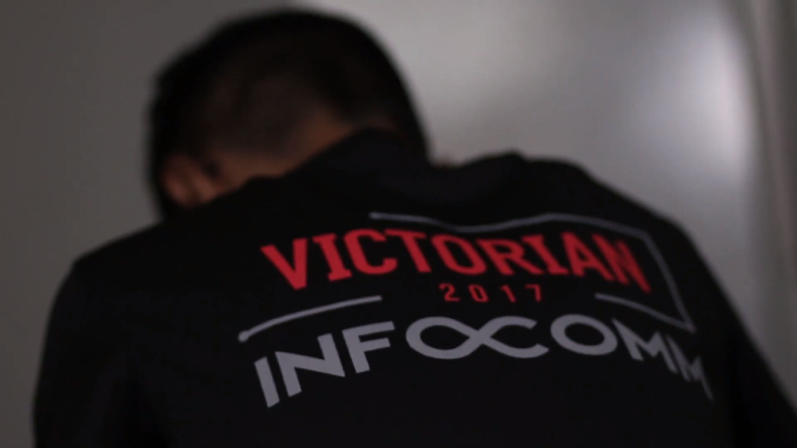
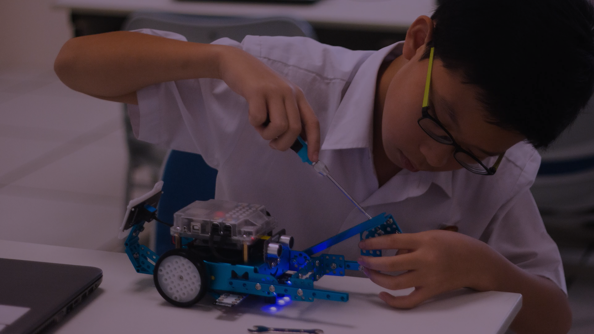
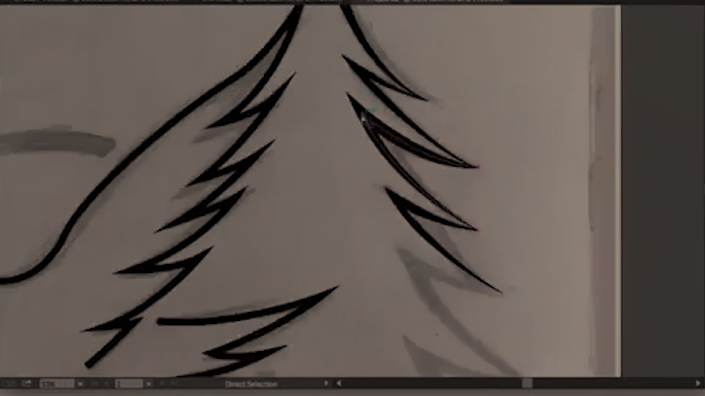

Using Arduino, you can code your robot to do all sorts of things! In this era with the growing reliability on robots, this will allow you to gain experience in the basic foundational skills required in constructing and programming robots.

Programming and Computer Science
One of the skills offered in Infocomm Club is programming, where we teach you how to use languages like c++ to create any program you would like. In addition, we will broaden your learning by teaching you computer science to further your understanding of computing technology.
Engineering and Arduino Robotics
Using Arduino, you can code your robot to do all sorts of things! In this era with the growing reliability on robots, this will allow you to gain experience in the basic foundational skills required in constructing and programming robots.

Vector Art and Pixel Art
Here, you will learn how to create pieces of pixel and vector art. These art pieces could in turn be used for sprites in a game, design for a logo or company, or maybe just to show off to your friends.

Videography and Video Editing
Use digital cameras to film videos, while making use of softwares such as Adobe Premiere Pro to design, create and edit professional looking videos.
Wide Variety of Resources
Overall, we offer a wide range of skills for you to learn. No matter which aspect of Infocomm you want to pursue, we teach them all. We also have suitable resources and tools for you to complete your learning, like robots, applications and any form of help you need.